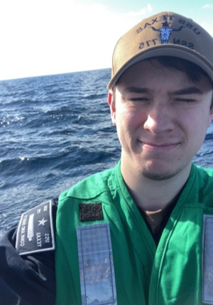

Joseph Lokey is a US Navy Submarine Force veteran who has witnessed the very deep mental lows of his friends, family, and peers.
While the inspiration for this application comes from seeing fellow crewmembers going through sad, lonely mental phases while out to sea,
the MindTrack application will be available for anyone who desires to better their mental health. This app will be free for not just military
members, but everyone around the United States.
